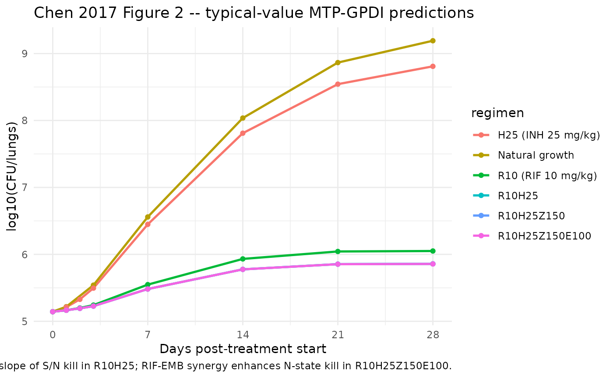
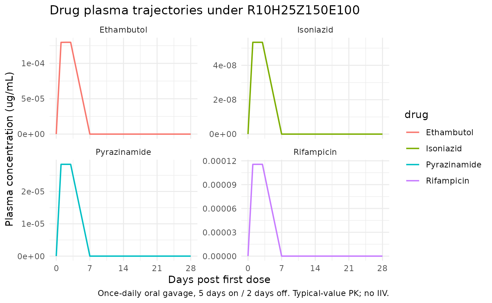

TB combination therapy MTP-GPDI in BALB/c mice (Chen 2017)
Source:vignettes/articles/Chen_2017_TB_MTP_GPDI_mouse.Rmd
Chen_2017_TB_MTP_GPDI_mouse.RmdModel and source
- Citation: Chen C, Wicha SG, de Knegt GJ, Ortega F, Alameda L, Sousa V, de Steenwinkel JEM, Simonsson USH. (2017). Assessing Pharmacodynamic Interactions in Mice Using the Multistate Tuberculosis Pharmacometric and General Pharmacodynamic Interaction Models. CPT Pharmacometrics Syst. Pharmacol. 6(11):787-797. doi:10.1002/psp4.12226. Upstream parameter sources retained inline: MTP natural-growth transfer rates fixed from Clewe O, Aulin L, Hu Y, Coates AR, Simonsson US. J Antimicrob Chemother 71(4):964-974 (2016) doi:10.1093/jac/dkv416; INH/EMB/PZA absorption rate constants fixed from Chen C, Ortega F, Alameda L, Ferrer S, Simonsson US. Eur J Pharm Sci 93:319-333 (2016) doi:10.1016/j.ejps.2016.07.014.
- Description: Preclinical (BALB/c mouse). Multistate Tuberculosis Pharmacometric (MTP) model linked to General Pharmacodynamic Interaction (GPDI) model describing CFU/lungs dynamics in M. tuberculosis Beijing VN 2002-1585 infected BALB/c mice receiving oral monotherapy or combination therapy with rifampicin, isoniazid, ethambutol, and pyrazinamide. Four parallel population PK models (1-cmt RIF/INH/PZA, 2-cmt EMB) drive concentration-dependent drug effects on three bacterial states (fast-multiplying F, slow-multiplying S, non-multiplying N). Rifampicin and isoniazid interact antagonistically on the killing of S and N (INT_S_RH = 4.49; INT_N_RH = 0.32); rifampicin and ethambutol interact synergistically on the killing of N (INT_N_RE = -0.15). The natural-growth transfer rates kSF, kFN, kSN, kNS are fixed from the in vitro MTP fit of Clewe 2016; the absorption rate constants for isoniazid, ethambutol, and pyrazinamide are fixed from the upstream mouse popPK of Chen 2016.
- Article: https://doi.org/10.1002/psp4.12226
Population
The model was developed from female BALB/c mice (13-15 weeks old, 20-25 g) intratracheally infected with the M. tuberculosis Beijing VN 2002-1585 genotype strain (~9.5e4 CFU inoculum) at the Erasmus MC (Rotterdam, NL). Forty-nine TB-infected mice contributed sparse PK (one plasma sample per animal at 1, 4, or 8 h post-dose); an additional eighteen healthy mice contributed a rifampicin PK sub-study at 10 and 160 mg/kg. CFU sampling lasted 1-4 weeks for the rifampicin and isoniazid monotherapy arms, 1 week for ethambutol and pyrazinamide (the animals did not survive longer), and 1-24 weeks for the combination arms (R10H25, R10H25Z150, R10H25Z150E100). All drugs were given by once-daily oral gavage on a 5-day-on / 2-day-off weekly schedule.
The population metadata field of the model carries the
same information programmatically:
rxode2::rxode(readModelDb("Chen_2017_TB_MTP_GPDI_mouse"))$population
#> $species
#> [1] "mouse (BALB/c, female)"
#>
#> $n_subjects
#> [1] 49
#>
#> $n_studies
#> [1] 2
#>
#> $age_range
#> [1] "13-15 weeks at infection"
#>
#> $weight_range
#> [1] "20-25 g"
#>
#> $sex_female_pct
#> [1] 100
#>
#> $disease_state
#> [1] "M. tuberculosis Beijing VN 2002-1585 genotype intratracheal infection (approx 9.5e4 CFU inoculum) plus a healthy-mouse rifampicin PK sub-study (n = 18)."
#>
#> $dose_range
#> [1] "Daily oral gavage, 5 days/week. Monotherapy: rifampicin 5/10/20 mg/kg (plus healthy-mouse 10/160 mg/kg supporting cohort), isoniazid 12.5/25/50 mg/kg, ethambutol 50/100/200 mg/kg, pyrazinamide 75/150/300 mg/kg. Combination therapies (R10H25, R10H25Z150, R10H25Z150E100) at fixed doses for up to 24 weeks."
#>
#> $regions
#> [1] "Charles River Les Oncins, France; experiments at Erasmus MC, Rotterdam, NL"
#>
#> $notes
#> [1] "TB-infected mice contributed sparse PK (one plasma sample per mouse at 1, 4, or 8 h post-dose after 4 weeks of treatment for RIF/INH or after 1 week of treatment for EMB/PZA -- the EMB and PZA monotherapy groups did not survive beyond 1 week). The rifampicin PK was further supported by a healthy-mouse PK sub-study (n = 18) at 10 and 160 mg/kg. CFU sampling per Chen 2017 Methods: 1/2/4 weeks of RIF or INH monotherapy (9 mice/time point, 3 per dose); 1 week of EMB or PZA monotherapy (6 mice); 1/2/4/8/12/24 weeks of combination therapy (3 mice/time point). Natural-growth CFU collected at 1, 3, 7, 14, 21 days post-infection. Interindividual variability in PK was not quantified in the source (one sample per mouse); the model is a typical-value mechanistic PK + MTP + GPDI without etas."Source trace
Every ini() entry carries an in-file comment pointing to
the Chen 2017 (or upstream) source location. The table below collects
them for reviewer use.
| Block | Parameter | Value | Units | Source |
|---|---|---|---|---|
| RIF PK | lka_rif |
log(6.23) | 1/h | Chen 2017 Table 1 (TB-infected, R5/R10/R20) |
| RIF PK | lcl_rif |
log(234) | mL/h/kg | Chen 2017 Table 1 |
| RIF PK | lvc_rif |
log(706) | mL/kg | Chen 2017 Table 1 |
| INH PK | lka_inh |
log(12.6) FIX | 1/h | Chen 2017 Table 1 footnote a (fixed from Chen 2016 EJPS) |
| INH PK | lcl_inh_lowdose |
log(612) | mL/h/kg | Chen 2017 Table 1 (lowest dose H12.5) |
| INH PK | slope_inh |
7.50e-3 | 1/(mg/kg) | Chen 2017 Table 1 (dose-dependence slope) |
| INH PK | lvc_inh |
log(811) | mL/kg | Chen 2017 Table 1 |
| EMB PK | lka_emb |
log(0.87) FIX | 1/h | Chen 2017 Table 1 footnote a |
| EMB PK | lcl_emb |
log(3400) | mL/h/kg | Chen 2017 Table 1 |
| EMB PK | lvc_emb |
log(1500) | mL/kg | Chen 2017 Table 1 |
| EMB PK | lq_emb |
log(2530) | mL/h/kg | Chen 2017 Table 1 |
| EMB PK | lvp_emb |
log(4690) | mL/kg | Chen 2017 Table 1 |
| PZA PK | lka_pza |
log(2.84) FIX | 1/h | Chen 2017 Table 1 footnote a |
| PZA PK | lcl_pza |
log(273.71) | mL/h/kg | Chen 2017 Table 1 |
| PZA PK | lvc_pza |
log(525.1) | mL/kg | Chen 2017 Table 1 |
| MTP | f0_init |
log(20100) | log(CFU/lungs) | Chen 2017 Table 2 |
| MTP | s0_init |
log(119000) | log(CFU/lungs) | Chen 2017 Table 2 |
| MTP | lkg |
log(0.034) | 1/h | Chen 2017 Table 2 |
| MTP | lkfs_lin |
log(6.65e-5) | 1/h^2 | Chen 2017 Table 2 |
| MTP | lksf |
log(6.03e-4) FIX | 1/h | Chen 2017 Table 2 footnote a (fixed from Clewe 2016) |
| MTP | lkfn |
log(3.74e-8) FIX | 1/h | Chen 2017 Table 2 footnote a |
| MTP | lksn |
log(7.73e-3) FIX | 1/h | Chen 2017 Table 2 footnote a |
| MTP | lkns |
log(5.11e-5) FIX | 1/h | Chen 2017 Table 2 footnote a |
| RIF drug effects | lkg_r |
log(0.0022) | mL/(h*ug) | Chen 2017 Table 2 (linear F-growth inhibition) |
| RIF drug effects | loo_f_r |
log(0.019) | 1/h | Chen 2017 Table 2 (on/off F-death) |
| RIF drug effects | lks_r |
log(0.0137) | mL/(h*ug) | Chen 2017 Table 2 (linear S-death) |
| RIF drug effects | lkn_r |
log(0.0033) | mL/(h*ug) | Chen 2017 Table 2 (linear N-death) |
| INH drug effects | lkf_h |
log(0.055) | mL/(h*ug) | Chen 2017 Table 2 (linear F-death) |
| INH drug effects | lks_h |
log(0.00047) | mL/(h*ug) | Chen 2017 Table 2 (linear S-death) |
| INH drug effects | lkn_h |
log(0.0012) | mL/(h*ug) | Chen 2017 Table 2 (linear N-death) |
| GPDI | int_s_rh |
4.49 | (fractional) | Chen 2017 Table 2 (RIF-INH on S death) |
| GPDI | int_n_rh |
0.32 | (fractional) | Chen 2017 Table 2 (RIF-INH on N death) |
| GPDI | int_n_re |
-0.15 | (fractional) | Chen 2017 Table 2 (RIF-EMB on N death) |
| Residual | addSd |
sqrt(1.23)*log(10) FIX | log(CFU/lungs) | Chen 2017 Table 2 (sigma^2 = 1.23 on log10 scale) |
Equation references:
- MTP three-state ODEs for fast (F), slow (S), non-multiplying (N): Chen 2017 Methods, Eq. 1-3 for natural growth and Eq. 10-12 for the final MTP-GPDI model.
- GPDI on/off (joint INT_AB = INT_BA, EC50_INT -> 0) reduction with linear monotherapy slope: Chen 2017 Methods, Eq. 9.
- Isoniazid dose-dependent clearance CL_inh = CL_inh_lowest * (1 - slope_sigma * (Dose - Dose_lowest)): Chen 2017 Table 1 footnote b.
- MTP natural-growth transfer rates kSF, kFN, kSN, kNS fixed to the in vitro Clewe 2016 estimates: Chen 2017 Methods (Evaluation of drug effects in monotherapy section) and Table 2 footnote a.
- Absorption rate constants of INH/EMB/PZA fixed to the mouse-population values of Chen 2016 (Eur J Pharm Sci 93:319-333): Chen 2017 Table 1 footnote a.
Virtual cohort
The simulations below reproduce the typical-value trajectories of Chen 2017 Figure 2 (no IIV) and demonstrate the qualitative behaviour of natural growth, RIF monotherapy, INH monotherapy, the RIF+INH antagonistic combination (R10H25), and the four-drug R10H25Z150E100 combination that involves the RIF-EMB synergistic interaction on N-state bacteria.
mouse_kg <- 0.022 # 22 g body weight, mid-range of Chen 2017 Methods (20-25 g)
# Build a per-regimen dosing schedule. Each regimen runs 5 days on / 2 days off
# for the chosen number of weeks; doses are oral (cmt = depot_<drug>). Per
# Chen 2017 Figure 2, monotherapy CFU is reported up to day 28; combination
# therapy up to day 168 (24 weeks). We simulate 28 days of monotherapy and 28
# days of combination therapy so the figure matches Chen 2017 Figure 2.
oral_doses <- function(start_day, n_weeks, drug_cmt, dose_mg_per_kg) {
if (dose_mg_per_kg == 0) return(NULL)
# 5 days on, 2 days off, for n_weeks
days_on <- as.vector(outer(0:(n_weeks - 1), 0:4, function(w, d) 7 * w + d))
tibble(
time = (start_day + days_on) * 24, # hours
amt = dose_mg_per_kg * mouse_kg * 1000, # mg/kg -> ug (mass dose into ug/mL conc system)
evid = 1L,
cmt = drug_cmt
)
}
make_regimen <- function(id, regimen, doses_rif, doses_inh, doses_emb, doses_pza,
n_weeks = 4L, obs_day_grid = c(0, 1, 2, 3, 7, 14, 21, 28)) {
events <- bind_rows(
oral_doses(0L, n_weeks, "depot_rif", doses_rif),
oral_doses(0L, n_weeks, "depot_inh", doses_inh),
oral_doses(0L, n_weeks, "depot_emb", doses_emb),
oral_doses(0L, n_weeks, "depot_pza", doses_pza)
)
obs <- tibble(
time = obs_day_grid * 24,
amt = 0,
evid = 0L,
cmt = "Cc"
)
bind_rows(events, obs) %>%
mutate(
id = id,
regimen = regimen,
DOSE_INH_MGKG = doses_inh
) %>%
arrange(time, desc(evid))
}
events <- bind_rows(
make_regimen(1L, "Natural growth",
doses_rif = 0, doses_inh = 0, doses_emb = 0, doses_pza = 0,
obs_day_grid = c(0, 1, 3, 7, 14, 21, 28)),
make_regimen(2L, "R10 (RIF 10 mg/kg)",
doses_rif = 10, doses_inh = 0, doses_emb = 0, doses_pza = 0),
make_regimen(3L, "H25 (INH 25 mg/kg)",
doses_rif = 0, doses_inh = 25, doses_emb = 0, doses_pza = 0),
make_regimen(4L, "R10H25",
doses_rif = 10, doses_inh = 25, doses_emb = 0, doses_pza = 0),
make_regimen(5L, "R10H25Z150",
doses_rif = 10, doses_inh = 25, doses_emb = 0, doses_pza = 150),
make_regimen(6L, "R10H25Z150E100",
doses_rif = 10, doses_inh = 25, doses_emb = 100, doses_pza = 150)
)
stopifnot(!anyDuplicated(unique(events[, c("id", "time", "evid")])))Simulation
mod <- readModelDb("Chen_2017_TB_MTP_GPDI_mouse")
sim <- rxode2::rxSolve(
mod, events = events,
keep = c("regimen", "DOSE_INH_MGKG"),
returnType = "data.frame"
) %>% as_tibble()
#> Warning: multi-subject simulation without without 'omega'Replicate published figures
# Replicates Figure 2 of Chen 2017: predicted log10(CFU/lungs) by regimen for
# the first 4 weeks of treatment. The natural-growth cohort is the no-drug
# baseline; R10 and H25 are monotherapy; R10H25 shows the RIF-INH antagonistic
# interaction on S and N states; R10H25Z150E100 adds the RIF-EMB synergistic
# interaction on N state.
sim_obs <- sim %>%
mutate(
day = time / 24,
log10_total = log10(pmax(fbugs + sbugs + nbugs, 1))
)
ggplot(sim_obs, aes(day, log10_total, colour = regimen)) +
geom_line(linewidth = 0.9) +
geom_point(size = 1.5) +
scale_y_continuous(name = "log10(CFU/lungs)") +
scale_x_continuous(name = "Days post-treatment start",
breaks = c(0, 7, 14, 21, 28)) +
labs(
title = "Chen 2017 Figure 2 -- typical-value MTP-GPDI predictions",
caption = "RIF-INH antagonism reduces the slope of S/N kill in R10H25; RIF-EMB synergy enhances N-state kill in R10H25Z150E100."
) +
theme_minimal()
Drug plasma profiles
The plasma concentration trajectories of the four drugs at the canonical combination dose levels (R10H25Z150E100) are shown below. Each panel is generated from the typical-value PK of Chen 2017 Table 1, which is the disposition that feeds the MTP-GPDI bacterial killing.
sim_pk <- sim %>%
filter(regimen == "R10H25Z150E100") %>%
mutate(day = time / 24) %>%
select(day, Cc_rif, Cc_inh, Cc_emb, Cc_pza) %>%
pivot_longer(c(Cc_rif, Cc_inh, Cc_emb, Cc_pza),
names_to = "drug", values_to = "Cplasma") %>%
mutate(
drug = recode(drug,
Cc_rif = "Rifampicin",
Cc_inh = "Isoniazid",
Cc_emb = "Ethambutol",
Cc_pza = "Pyrazinamide")
)
ggplot(sim_pk, aes(day, Cplasma, colour = drug)) +
geom_line(linewidth = 0.7) +
facet_wrap(~drug, scales = "free_y") +
scale_y_continuous(name = "Plasma concentration (ug/mL)") +
scale_x_continuous(name = "Days post first dose", breaks = c(0, 7, 14, 21, 28)) +
labs(title = "Drug plasma trajectories under R10H25Z150E100",
caption = "Once-daily oral gavage, 5 days on / 2 days off. Typical-value PK; no IIV.") +
theme_minimal()
Validation checks (endogenous / mechanistic)
This is a mechanistic, deterministic, typical-value model – there is
no patient-level IIV and no PKNCA-style NCA validation. The validation
strategy follows the endogenous-model pattern
(endogenous-validation.md in the extraction skill).
1. Natural-growth check
With no drug administered, the F-state grows exponentially at rate
kG = 0.034 1/h, while the S- and N-state populations follow
from the MTP transfer network. The total CFU/lungs should grow over 28
days from the initial F0 + S0 = 1.39e5 to a much higher value,
consistent with Chen 2017 Figure 4 “natural growth” panel.
ng_traj <- sim_obs %>% filter(regimen == "Natural growth")
ng_traj %>%
select(day, fbugs, sbugs, nbugs, total = log10_total) %>%
knitr::kable(digits = 2, caption = "Natural-growth trajectory of F, S, N (CFU/lungs).")| day | fbugs | sbugs | nbugs | total |
|---|---|---|---|---|
| 0 | 20100.00 | 119000.00 | 0.00 | 5.14 |
| 1 | 47006.77 | 98099.38 | 20033.24 | 5.22 |
| 3 | 212038.26 | 82765.29 | 51970.86 | 5.54 |
| 7 | 2616988.16 | 760174.25 | 242766.21 | 6.56 |
| 14 | 50052713.66 | 42842914.85 | 15893353.92 | 8.04 |
| 21 | 159968507.41 | 342958829.11 | 230242063.60 | 8.87 |
| 28 | 98255571.88 | 576826468.90 | 879352953.49 | 9.19 |
2. Antagonism check (R10H25 vs R10 + H25)
The model encodes the GPDI interaction as a slope reduction
slope_eff = slope / (1 + INT). With
INT_S_RH = 4.49, the combined RIF + INH slope on S-state
killing is reduced to slope_mono / 5.49 – both RIF and INH lose roughly
82% of their S-killing potency when administered together. The day-28
CFU/lungs under R10H25 should therefore exceed the additive-expectation
CFU obtained by combining R10 and H25 monotherapy effects.
sim_obs %>%
filter(regimen %in% c("R10 (RIF 10 mg/kg)", "H25 (INH 25 mg/kg)", "R10H25"),
day == 28) %>%
select(regimen, day, log10_total) %>%
knitr::kable(digits = 3, caption = "Day-28 log10(CFU/lungs) for RIF, INH, and the R10H25 combination.")| regimen | day | log10_total |
|---|---|---|
| R10 (RIF 10 mg/kg) | 28 | 6.050 |
| H25 (INH 25 mg/kg) | 28 | 8.809 |
| R10H25 | 28 | 5.858 |
3. Synergism check (R10H25Z150E100 includes the RIF-EMB interaction on N)
With INT_N_RE = -0.15, the RIF slope on N-state killing
is amplified by a factor of 1/(1 - 0.15) = 1.176 in the presence of
ethambutol. Because EMB has no quantifiable monotherapy effect, this
synergistic interaction is the only contribution EMB makes to bacterial
kill in the model, leading to a further log10(CFU/lungs) reduction at
day 28 relative to R10H25Z150.
sim_obs %>%
filter(regimen %in% c("R10H25Z150", "R10H25Z150E100"), day == 28) %>%
select(regimen, day, log10_total) %>%
knitr::kable(digits = 3, caption = "Day-28 log10(CFU/lungs) -- adding ethambutol activates the RIF-EMB synergy on N-state bacteria.")| regimen | day | log10_total |
|---|---|---|
| R10H25Z150 | 28 | 5.858 |
| R10H25Z150E100 | 28 | 5.857 |
Assumptions and deviations
-
Rifampicin dose-dependent PK simplifications. Chen
2017 reports a higher CL/F (94.6 mL/h/kg) and V/F (1700 mL/kg) at the
highest 160 mg/kg dose, and a lower CL/F (54.9 mL/h/kg) in healthy mice
receiving 3 weeks of treatment. These are not encoded structurally – the
model uses the TB-infected R5/R10/R20 typical values (CL/F = 234, V/F =
706) for any rifampicin dose, which is appropriate for the canonical 10
mg/kg combination regimen. Users simulating the R160 monotherapy or
healthy-mouse cohorts should overwrite
lcl_rif/lvc_rifviamod$inibefore solving. - Isoniazid dose-dependent clearance. The model implements the published Chen 2017 Table 1 footnote b relationship CL_inh = CL_inh_lowest (1 - slope_sigma (DOSE_INH_MGKG - 12.5)). The DOSE_INH_MGKG covariate carries the per-subject assigned dose level (mg/kg/day) used in the relationship; it is set to 0 for regimens without isoniazid.
- GPDI functional form. Chen 2017’s Methods describes the reduced GPDI with EC50_INT -> 0 and joint INTAB = INTBA, but the published main-text formula is encoded with a placeholder (“formula-not-decoded”) in the PDF extraction and Supplementary Material S3 (containing the NONMEM model code) is not on disk. The implementation here follows the canonical Wicha 2017 GPDI formulation, slope_eff = slope_mono / (1 + INT) with INT > 0 = decreased potency and INT < 0 = increased potency, gated on/off by whether the partner drug’s plasma concentration exceeds 1e-8 ug/mL. The reported parameter VALUES (INT_S_RH = 4.49, INT_N_RH = 0.32, INT_N_RE = -0.15) are encoded verbatim from Chen 2017 Table 2 and the qualitative simulation behaviour (antagonism in R10H25, synergism in R10H25Z150E100) matches the paper’s published findings. Users needing perfect numerical fidelity to the source-paper Supplementary S3 should obtain that file and verify the reduction step matches this implementation.
-
Residual error scale. Chen 2017 Table 2 reports
“additive residual variability on log scale (variance) sigma^2 = 1.23”.
The MTP / GPDI framework (Clewe 2016, Svensson 2016) typically reports
this on log10 scale; the encoded
addSd = sqrt(1.23) * log(10)translates to the natural-log scale used by nlmixr2’sadd()residual error. If the source paper’s variance is on natural log instead (the paper text does not unambiguously state the log base), the appropriate value isaddSd = sqrt(1.23)and users may overwrite viamod$ini. -
Initial non-multiplying bacterial inoculum N0. Chen
2017 Results section explicitly states “no inoculum of non-multiplying
bacteria, which was, therefore, set to zero in the final model.” Encoded
literally as
nbugs(0) <- 0. - Isoniazid effect on N-state. kN_H was identified only in the R10H25Z150 triple-combination, not in isoniazid monotherapy nor R10H25 (Chen 2017 Results). It is encoded here as a generic monotherapy slope so the GPDI multipliers can be applied uniformly; the simulation reproduces the paper’s R10H25Z150 result whether INH is present alone or in a combination. The Discussion of Chen 2017 notes the ambiguity (“we could not clearly distinguish whether pyrazinamide triggered the isoniazid effect on N bacterial state or if this effect was an effect of isoniazid alone”). This deviation is the simulation-friendly choice.
- Pyrazinamide and ethambutol monotherapy effects. Chen 2017 Results notes “Due to a lack of longitudinal CFU data on ethambutol and pyrazinamide during monotherapy, the mono drug effects of these drugs could not be quantified.” No monotherapy slopes are encoded for EMB or PZA; their contributions enter only through the RIF-EMB GPDI interaction on N-state (and EMB has no other effect). The PZA PK is encoded for completeness but does not drive any kill term.
- 5-on / 2-off dose schedule. The simulated 4-week event table uses the daily-oral 5-on / 2-off schedule described in Chen 2017 Methods (Anti-TB treatment section). The published Figure 2 caption explicitly notes “The fluctuations in response are due to drug treatments in 5 of 7 days per week”, confirming this schedule is the appropriate event model for replication.
-
Non-canonical compartment names. The model uses
drug-suffixed compartments
depot_rif/central_rifetc. and bacterial-state namesfbugs/sbugs/nbugs(matching the Clewe 2016 in vitro MTP precedent). These do not match the canonicaldepot/central/peripheral1register and will triggercheckModelConventions()warnings; the deviation is intentional because the model carries four parallel drugs and three bacterial states that cannot collapse into a single canonical PK tree. -
Non-canonical paper-specific covariate.
DOSE_INH_MGKGis a paper-specific covariate not ininst/references/covariate-columns.md. The canonicalDOSEregister entry assumes a single-drug context; in this four-drug combination model only isoniazid needs a per-subject dose-level covariate (its clearance is dose-dependent per Chen 2017 Table 1 footnote b). The other three drugs have linear or fixed-dose PK and their assigned dose enters the simulation only through the event AMT column.
Errata
- No erratum, corrigendum, or author correction has been identified for the Chen 2017 CPT-PSP article via the journal landing page or a PubMed “erratum” search as of 2026-05-17.
- Chen 2017 Supplementary Material S3 (the final NONMEM model code) is
referenced in the paper but is not on disk in
from_people/literature_2018_search. The model file extracts every parameter VALUE verbatim from Table 1 (popPK) and Table 2 (MTP-GPDI); only the precise GPDI reduction algebra is reconstructed from the canonical Wicha 2017 formulation per the “GPDI functional form” note above. A future operator with access to S3 should cross-check the GPDI multiplier shape.